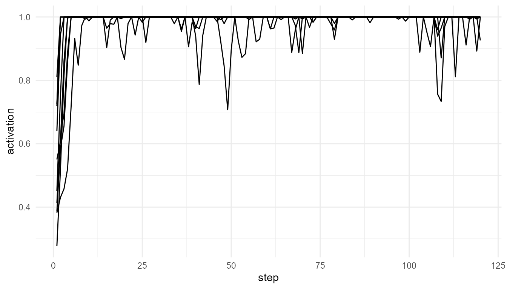

Theory background
Global Workspace Theory proposes that conscious access involves information becoming globally available to many specialized systems.
In simple terms:
- Many processes operate locally.
- They compete for attention.
- One signal may become dominant.
- The winning signal is broadcast to the wider system.
Run the simulation
gw <- simulate_global_workspace(n_processes = 10, steps = 120, noise = 0.1, ignition_threshold = 0.75, seed = 10)
head(gw)
#> step process activation winner is_winner broadcast ignited
#> 1 1 P1 0.7189298 P4 FALSE 0.0000000 TRUE
#> 2 1 P2 0.5504773 P4 FALSE 0.0000000 TRUE
#> 3 1 P3 0.4504827 P4 FALSE 0.0000000 TRUE
#> 4 1 P4 0.8099538 P4 TRUE 0.8099538 TRUE
#> 5 1 P5 0.3825086 P4 FALSE 0.0000000 TRUE
#> 6 1 P6 0.4128062 P4 FALSE 0.0000000 TRUEVisualize activation
plot_consciousness_sim(gw, x = "step", y = "activation", group = "process")
Inspect winning processes
table(gw$winner)
#>
#> P1 P4
#> 1190 10